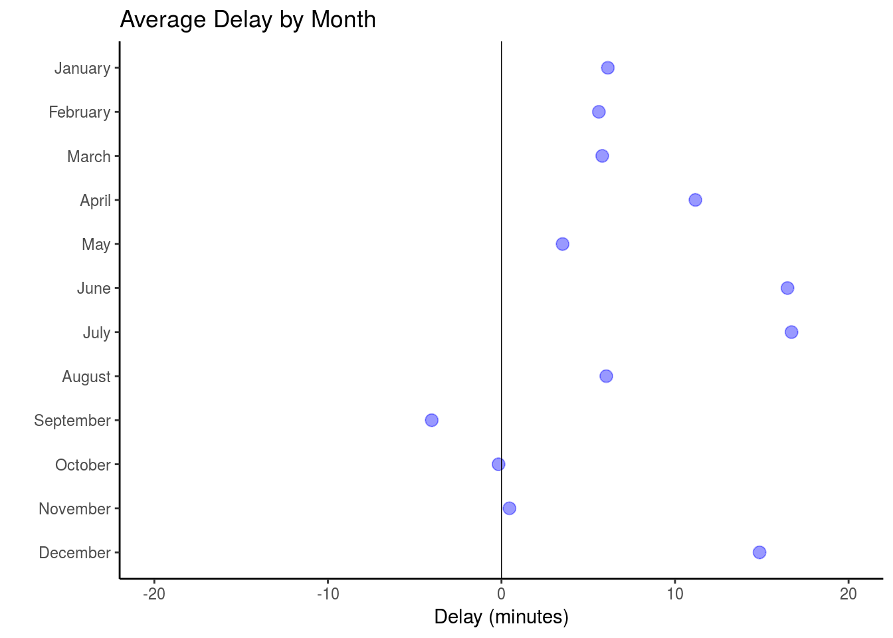

About the dataset
In this analysis, we explore the dplyr functions used to ask interesting questions of a more complex dataset We’ll use a dataset of flights that departed from New York city airports (including Newark, John F. Kennedy, and Laguardia airports) in 2013. This dataset is also featured online in the Introduction to dplyr vignette, and is drawn from the Bureau of Transportation Statistics database.
This dataset will use over 300,000 observations to ask the following questions:
- Which airline has the highest number of delayed departures?
- On average, to which airport do flights arrive most early?
- In which month do flights tend to have the longest delays?
get to know the dataframe
## check the number of rows/columns
dim(flights)## [1] 336776 19## inspect the column names
colnames(flights) ## [1] "year" "month" "day" "dep_time"
## [5] "sched_dep_time" "dep_delay" "arr_time" "sched_arr_time"
## [9] "arr_delay" "carrier" "flight" "tailnum"
## [13] "origin" "dest" "air_time" "distance"
## [17] "hour" "minute" "time_hour"Identify the airline (carrier) that has the highest number of delayed flights
## start with the flights
has_most_delays <- flights %>%
## group by airline (carrier)
group_by(carrier) %>%
## find only the delays
filter(dep_delay > 0) %>%
## count the observations
summarize(num_delay = n()) %>%
## find most delayed
filter(num_delay == max(num_delay)) %>%
## select the airline
select(carrier) Get name of the most delayed carrier
## start with the previous answer
most_delayed_name <- has_most_delays %>%
## join on airline ID
left_join(airlines, by = "carrier") %>%
## select the airline name
select(name) ## access the value from the tibble
print(most_delayed_name$name)## [1] "United Air Lines Inc."Calculate the average arrival delay (arr_delay) for each destination (dest)
most_early <- flights %>%
## group by destination
group_by(dest) %>%
## compute mean delay
summarize(delay = mean(arr_delay)) # Compute the average delay by destination airport, omitting NA results
most_early <- flights %>%
## group by destination
group_by(dest) %>%
## compute mean delay
summarize(delay = mean(arr_delay, na.rm = TRUE)) Identify the destination where flights, on average, arrive most early
most_early <- flights %>%
## group by destination
group_by(dest) %>%
## compute mean delay, ignore NA
summarize(delay = mean(arr_delay, na.rm = TRUE)) %>%
## filter for the *least* delayed
filter(delay == min(delay, na.rm = TRUE)) %>%
## select the destination (and delay to store it)
select(dest, delay) %>%
## join on `airports`dataframe
left_join(airports, by = c("dest" = "faa")) %>%
## select output variables of interest
select(dest, name, delay) print(most_early)## # A tibble: 1 x 3
## dest name delay
## <chr> <chr> <dbl>
## 1 LEX Blue Grass -22Identify the month in which flights tend to have the longest delays
flights %>%
## group by selected feature
group_by(month) %>%
## summarize value of interest
summarize(delay = mean(arr_delay, na.rm = TRUE)) %>%
## filter for the record of interest
filter(delay == max(delay)) %>%
## select the column that answers the question
select(month) %>%
## print the tibble out directly
print() ## # A tibble: 1 x 1
## month
## <int>
## 1 7Compute delay by month, adding month names for visual display, note ‘month.name’ is a variable build into R
delay_by_month <- flights %>%
group_by(month) %>%
summarize(delay = mean(arr_delay, na.rm = TRUE)) %>%
select(delay) %>%
mutate(month = month.name)# Create a plot using the ggplot2 package
ggplot(data = delay_by_month) +
geom_point(
mapping = aes(x = delay, y = month),
color = "blue",
alpha = .4,
size = 3
) +
geom_vline(xintercept = 0, size = .25) +
xlim(c(-20, 20)) +
scale_y_discrete(limits = rev(month.name)) +
theme_classic() +
labs(title = "Average Delay by Month", y = "", x = "Delay (minutes)")